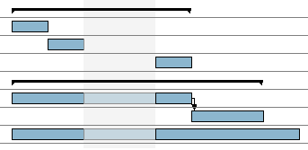
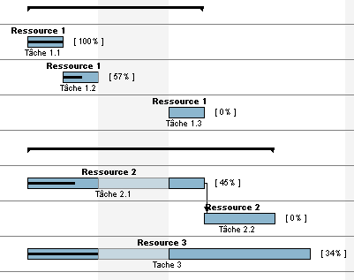

Personnalisation du graphique
GanttProject vous permet de personnaliser l'affichage du diagramme et plus pr�cis�ment les informations
affich�es directement sur le diagramme de Gantt.
Pour acc�der � cette fonctionnalit�, activez le menu contextuel du graphique et cliquez sur Propri�t�s du diagramme de Gantt ou
allez dans Affichage, Propri�t�s du diagramme de Gantt.
Plusieurs informations sont affichables par d�faut :
- dates de d�but et de fin de projet ;
- dates de d�but et de fin de t�che ;
- nom de la t�che ;
- identifiant de la t�che ;
- dur�e de la t�che ;
- progression de la t�che ;
- responsable de la t�che ;
- ressources affect�es ;
- pr�d�cesseurs.
� l'exception des dates de d�but et de fin de projet, toutes ces informations sont affichables soit au-dessus,
en-dessous, � gauche ou � droite de la t�che.
Les informations des propri�t�s personnalis�es sont �galement affichables.
Voici un exemple avec aucune information affich�e :

Voici un exemple avec quelques informations :
